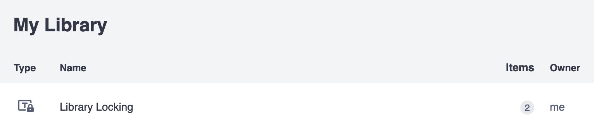
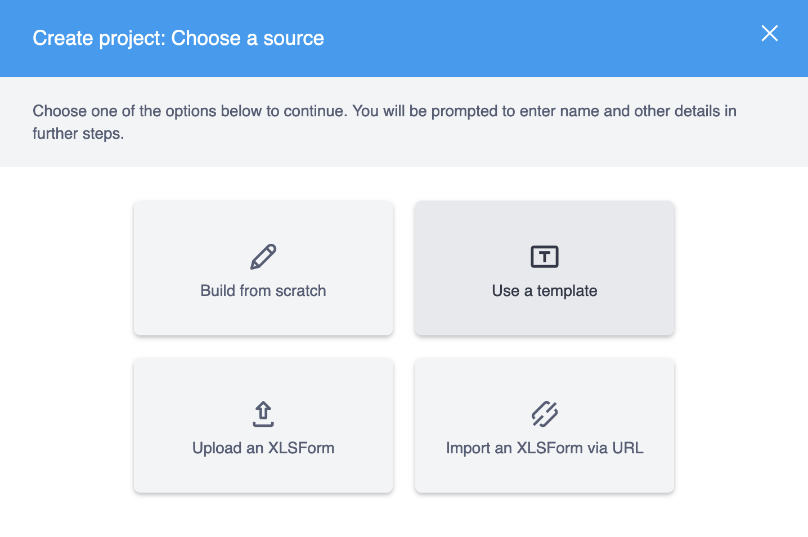
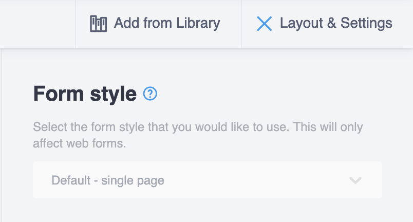

Search the knowledge base, browse our resources, and visit our forum for more detailed information
Última actualización: 30 Sep 2025
«Bloqueo de biblioteca» se refiere a la funcionalidad que permite que varios aspectos de una encuesta sean «bloqueados» cuando se crean a partir de una plantilla que contiene atributos de bloqueo. Todos los aspectos de la edición de un formulario están disponibles para ser bloqueados mediante la asignación de «perfiles de bloqueo» a nivel de formulario, pregunta o grupo. Estos perfiles de bloqueo pueden tener asignadas «restricciones» granulares que agrupan funcionalidades de bloqueo. Alternativamente, el formulario puede ser completamente bloqueado, evitando todos los aspectos de edición.
Actualmente, solo se admite el bloqueo establecido dentro del propio XLSForm, pero se incorporará al editor de formularios de KoboToolbox (Formbuilder) en algún momento en el futuro.
Esta funcionalidad puede ser útil en un entorno de equipo grande y distribuido donde se usa una plantilla estándar, con algunas funcionalidades bloqueadas, y cada equipo puede hacer los ajustes locales necesarios para sus necesidades. El/la creador/a de la plantilla puede continuar haciendo actualizaciones, pero los bloqueos restringirán cambios a aspectos específicos del formulario para quienes creen un proyecto basado en la plantilla.
Bloquear aspectos de un formulario es independiente de manejar permisos del proyecto.
Hay tres niveles de restricciones que se pueden establecer:
Grupo, y
Además, hay un booleano kobo--lock_all que se puede establecer en la hoja settings
que hará que la encuesta esté completamente bloqueada.
kobo--lock_all¶Si kobo--lock_all se establece en True, entonces todas las restricciones granulares adicionales
son redundantes ya que el formulario está completamente bloqueado. Si se establece en False o
se omite de la hoja settings, entonces se pueden usar perfiles de bloqueo definidos para
controlar el comportamiento de bloqueo:
hoja settings
kobo–lock_all |
|---|
true |
settings |
Los valores aceptados para kobo--lock_all son los mismos que en la hoja survey que
pyxform admite.
No se generará ningún error si se usa un valor no válido, solo que el formulario no
funcionará como se espera desde la perspectiva del/de la usuario/a.
Ten en cuenta que el nombre de la restricción, como choice_add a continuación, está
predefinido y solo las restricciones enumeradas a continuación son opciones válidas.
Nombre |
Descripción |
|---|---|
|
Agregar nuevas opciones a una pregunta |
|
Eliminar una opción existente de una pregunta |
|
Editar un |
|
Editar una |
|
Reordenar las opciones de una pregunta |
|
Eliminar una pregunta dada |
|
Editar una |
|
Editar la configuración de una pregunta (aparte de |
|
Editar la configuración de lógica de salto de una pregunta ( |
|
Editar la configuración de criterios de validación de una pregunta ( |
Nombre |
Descripción |
|---|---|
|
Botón Eliminar todo del modal de eliminar grupo (o botón de eliminar grupo si se combina con |
|
Botón Desagrupar preguntas del modal de eliminar grupo (o botón de eliminar grupo si se combina con |
|
Editar una |
|
Agregar o clonar preguntas dentro del grupo dado (grupos hijos incluidos) |
|
Eliminar cualquier pregunta del grupo dado (preguntas de grupos hijos incluidas) |
|
Cambiar el orden de las preguntas dentro del grupo dado (grupos hijos incluidos) |
|
Cambiar Toda la configuración del grupo desde la Configuración del grupo dado |
|
Cambiar Lógica de salto desde la Configuración del grupo dado |
Nombre |
Descripción |
|---|---|
|
Cambiar la apariencia del formulario desde Diseño y Configuración |
|
Reemplazar formulario usando el modal Reemplazar formulario |
|
Botón para agrupar preguntas |
|
Usar la opción Insertar selección en cascada y cada botón Agregar pregunta y Clonar pregunta |
|
Cambiar el orden de cualquier pregunta |
|
Editar idiomas en el Modal de traducciones |
|
Editar preguntas meta desde Diseño y Configuración |
Hay tres hojas donde se definen y establecen los perfiles de bloqueo: survey,
settings y kobo--locking-profiles. La hoja kobo--locking-profiles
no está oficialmente admitida por pyxform y
es específica de KoboToolbox.
Las restricciones a nivel de formulario se definen en la hoja settings y las restricciones a nivel de pregunta y
grupo se definen en la hoja survey.
Desde la hoja kobo--locking-profiles, todos los perfiles de bloqueo se
definen en una estructura de matriz, usando la palabra clave «locked» para asignar una
«restricción» a un «perfil» específico. Por ejemplo:
kobo–locking-profiles
Define los perfiles y asígnales restricciones. No hay límite en el
número de perfiles que se pueden definir (profile_1, …, profile_n) pero hay
solo tres colores que diferencian su apariencia de bloqueo en el
editor de formularios.
restriction |
profile_1 |
profile_2 |
profile_3 |
|---|---|---|---|
choice_add |
locked |
||
choice_delete |
locked |
||
choice_label_edit |
locked |
||
choice_order_edit |
locked |
locked |
|
form_appearance |
locked |
||
kobo–locking-profiles |
Ten en cuenta que no todas las restricciones válidas necesitan incluirse en la
columna restriction, pero se generará un error si se incluye una
restricción no válida.
hoja settings
Establece restricciones a nivel de formulario y el booleano kobo--lock_all.
kobo–locking-profile |
kobo–lock_all |
|---|---|
profile_3 |
false |
settings |
Ten en cuenta que omitir kobo--lock_all de la
hoja settings es equivalente a establecerlo en False.
hoja survey
Establece restricciones a nivel de pregunta y grupo.
type |
name |
label |
kobo–locking-profile |
|---|---|---|---|
select_one countries |
country |
Selecciona tu país |
profile_1 |
select_one cities |
city |
Selecciona tu ciudad |
profile_2 |
survey |
hoja choices
No se pueden establecer restricciones en la hoja choices.
list_name |
name |
label |
|---|---|---|
countries |
canada |
Canadá |
countries |
usa |
Estados Unidos de América |
cities |
vancouver |
Vancouver |
cities |
toronto |
Toronto |
cities |
baltimore |
Baltimore |
cities |
boston |
Boston |
choices |
Este ejemplo de XLSForm se puede descargar aquí.
Importa tu XLSForm como una template a través de la interfaz de usuario de KoboToolbox navegando a
tu Biblioteca y haciendo clic en NUEVO y luego en Cargar. Asegúrate de
seleccionar template del menú desplegable Elegir el tipo deseado y luego
importa tu XLSForm.

La plantilla bloqueada ahora se mostrará en la vista de lista de tu biblioteca con un símbolo de candado.

Una vez que se ha agregado una plantilla bloqueada a tu biblioteca – ya sea directamente mediante la importación de un XLSForm como plantilla, creando una plantilla basada en una encuesta bloqueada o agregando una plantilla bloqueada desde las colecciones públicas – puedes crear un nuevo proyecto. En la sección Proyectos de la interfaz de usuario, haz clic en NUEVO y luego en Usar una plantilla.

Elige la plantilla bloqueada que deseas usar para crear el nuevo proyecto.
Desde ahí, continúa para crear el proyecto.
Cuando se usa esta plantilla bloqueada de ejemplo para crear un nuevo proyecto, el editor de formularios se verá de la siguiente manera:
Las áreas en gris son aquellas que se han deshabilitado mediante las restricciones.
Un cuadro de diálogo encima de la primera pregunta mostrará una descripción general de algunas de las restricciones del formulario.
Cada pregunta con perfiles de bloqueo mostrará, en su configuración, qué restricciones se han establecido.
Algunas configuraciones a nivel de formulario también estarán en gris.

Los siguientes casos actualmente generarán un FormPackLibraryLockingError:
Si un nombre de perfil de bloqueo (encabezado de columna en la hoja kobo--locking-profiles) es «locked» (igual que la palabra clave de bloqueo)
Si una restricción enumerada en kobo--locking-profiles no es válida (no está en la
lista de restricciones predefinidas)
Si hay una hoja llamada kobo--locking-profiles pero no hay columna restriction
Si no se definen perfiles de bloqueo (encabezados de columna en la
hoja kobo--locking-profiles)
La validación de las funcionalidades de bloqueo de biblioteca de XLSForm se ampliará en el futuro.
En algunos editores de hojas de cálculo, dos guiones simples (--) se convierten automáticamente
en un guion largo (—), lo que dificulta escribir kobo-- en
una celda. Por lo tanto, convertimos todas las instancias de guiones cortos y largos en dos guiones simples (cuando tienen el prefijo kobo). Un XLSForm con el nombre de hoja
«kobo—locking-profiles» se convertirá en kobo--locking-profiles y
de manera similar para los encabezados de columna.
Hay dos atributos del activo donde se puede acceder
y modificar la información de bloqueo: asset.summary y asset.content.
Si kobo--locking-profile es un nombre de columna en la hoja survey, también
se enumerará en el arreglo asset.summary.columns.
En asset.summary, los siguientes dos atributos booleanos describen una descripción general de
la estructura de bloqueo del formulario:
lock_all, y
lock_any
La lógica por la cual se establece cada uno de esos booleanos es la siguiente:
lock_all es True solo si kobo--lock_all se establece en True en la
hoja settings, de lo contrario es False
lock_any se establece en True si cualquiera de los siguientes casos es True:
lock_all es True,
Se establece un kobo--locking-profile en la hoja settings, o
Al menos un kobo--locking-profile se establece en la hoja survey
En el ejemplo anterior, lo siguiente estará presente en asset.summary:
{
...,
"columns": [
...,
"kobo--locking-profile"
],
"lock_all": false,
"lock_any": true,
...
}
En asset.content, existe un atributo content.kobo--locking-profiles como
un arreglo de objetos JSON con la siguiente estructura:
[
{
"name": "profile_1",
"restrictions": [
"choice_add",
"choice_label_edit",
"choice_order_edit"
]
},
...
]
En content.settings, lo siguiente estará presente en un objeto JSON:
{
"kobo--locking-profile": "profile_3",
"kobo--lock_all": false
}
Y finalmente en content.survey, cada pregunta a la que se le ha asignado un perfil de bloqueo
tendrá un atributo kobo--locking-profile de la siguiente manera:
[
{
"name": "country",
"type": "select_one",
...
"kobo--locking-profile": "profile_1"
},
{
"name": "city",
"type": "select_one",
...
"kobo--locking-profile": "profile_2"
},
...
]
De los cuatro tipos de activos (survey, template, question y block), solo
las templates y las surveys manejan funcionalidades de bloqueo de biblioteca y los bloqueos se
aplican solo en las encuestas. Prácticamente, esto significa lo siguiente:
Supongamos que se importa un XLSForm que contiene funcionalidades de bloqueo válidas:
Si se importa como un block, entonces todos los rastros de bloqueo se excluyen y/o
eliminan del activo. Esto resulta en un activo block que será
equivalente al mismo formulario cargado sin ninguna funcionalidad de bloqueo;
Si se importa como una survey (importada a través de la sección Proyectos) o
template, entonces todos los bloqueos están intactos:
Si, desde el editor de formularios:
se agrega una pregunta a la biblioteca, entonces todos los bloqueos se eliminan del
nuevo activo question
se agrega un grupo de preguntas a la biblioteca como un block, entonces todos
los bloqueos se eliminan
Si se crea una template desde el activo survey bloqueado, entonces esa
template heredará todos los bloqueos que tenía la survey (pero como es
una plantilla, puedes editar el contenido en el editor de formularios),
Si se crea una survey desde una template bloqueada, la encuesta
heredará todos los bloqueos que tenía la template
Tipo de activo original |
Proceso/acción |
Estado del |
|---|---|---|
|
importar archivo XLSForm de |
bloqueado |
|
crear |
bloqueado |
|
crear |
no bloqueado |
|
crear |
no bloqueado |
|
importar archivo XLSForm de |
bloqueado |
|
crear |
bloqueado |
|
crear |
no bloqueado |
|
crear |
no bloqueado |
|
importar archivo XLSForm de |
no bloqueado |
|
agregar |
no bloqueado |
|
agregar |
no bloqueado |
|
crear |
no bloqueado |
|
importar archivo XLSForm de |
no bloqueado |
|
agregar |
no bloqueado |
|
agregar |
no bloqueado |
|
crear |
no bloqueado |
※ Estas acciones no son posibles en la interfaz de usuario.
kobo--lock_all¶Atributo que contiene un valor booleano, establecido en la hoja settings y aplica
todas las restricciones de bloqueo al formulario y a todas las preguntas y grupos (haciendo
redundantes los perfiles de bloqueo granulares).
kobo--locking-profile¶Nombre de columna en las hojas survey y settings donde se asigna el perfil de bloqueo
a una pregunta o grupo (en survey) o al formulario (en settings).
kobo--locking-profiles¶Nombre de hoja donde se asignan restricciones a perfiles.
locked¶Palabra clave utilizada para asignar una restricción a un perfil en la
hoja kobo--locking-profiles.
El nombre asignado a un grupo de restricciones, definido en la
hoja kobo--locking-profiles. Se asigna a preguntas y grupos en la
hoja survey y al formulario en la hoja settings.
Un atributo de bloqueo granular que se puede asignar a un perfil y controlar el comportamiento de bloqueo a nivel de pregunta, grupo o formulario.
Un formulario que no contiene atributos de bloqueo.
Did you find what you were looking for? Was the information clear? Was anything missing?
Share your feedback to help us improve this article!